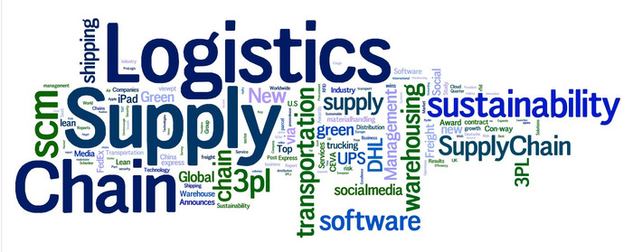
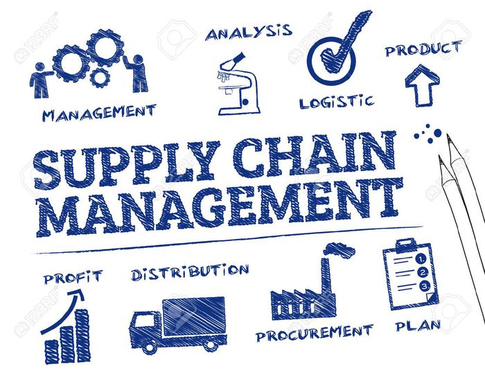

The word "Supply Chain" was first used in 1905 during the war-plagued era. Featured in an article about wartime situation in the famous newspaper "The Independent". Gaining mainstream recognition during the mid-1990's, the term Supply Chain Management is now a commonly used word in almost all industries and companies ranging from small to big.
Supply chain management is the practice of incorporating a company's social, environmental and economic goals into the coordination of inter-business processes to improve the long-term economic performance of the individual company and its supply chains.
Regarded as the science of the future, this is a unique branch in the field of Management which involves a series of key activities and processes that must be completed in an efficient and timely manner for the product to reach the consumer.
The supply chain is responsible for getting your favorite snack across the world and to your kitchen. Without an efficient supply chain, your options would be severely limited and restricted.
SCM cuts little or no slack for errors as it has to meet the growing needs of the consumers. The goal of this field is to provide high product availability with minimal hassle between the producer and the end customer. Logistics plays one of the most pivotal and essential parts of Supply Chain.
A two-way communication between the supplier and the consumer is critical as it creates visibility of demand and fast detection of problems. Supply Chain Managers are required to take decisions on what to make, buy and sell. Moving the product back also plays a key role in case of damage, repair, recycling or return.
SCM involves a wide range of processes and complex activities to improve the flows of product, information, and money. This opens a window of opportunity for a large number of individuals to take up SCM as a career choice. Supply chain activities aren't the responsibility of one person or one company. Multiple people need to be actively involved in a number of different processes to make it work.
An SCM team is responsible for
The primary focus of this field lies in revenue growth, asset utilization, and cost. It also stresses the importance of coordinating activities within and across organizations. All said and done Supply Chain Management presents an interesting career choice for the interested.